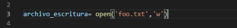
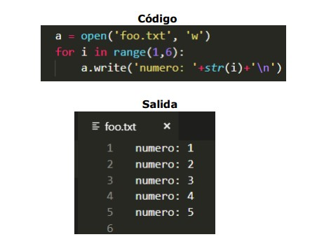

TEMARIO
INTRODUCCIÓN
PROGRAMACIÓN BÁSICA
CONTROLES DE FLUJO
FUNCIONES
ESTRUCTURAS DE DATOS
PROGRAMACIÓN ORIENTADA A OBJETOS
Escritura de archivos de texto
Si queremos abrir en modo de escritura un archivo llamado (por ejemplo) foo.txt que este en el mismo directorio que nuestro código fuente se hace lo siguiente:
Al colocar ‘w’ como segundo argumento se está abriendo el archivo en modo
escritura. Lo que hace el programa a la hora de abrir este archivo de esta
manera es que accede al archivo (si existe), borra todo el contenido en él y
luego prepara al archivo para que se le pueda añadir contenido.
Si no queremos que se borre el contenido del archivo y sólo queramos añadir
más contenido, podemos hacer lo siguiente:
El segundo argumento ‘a’ nos permite abrir el archivo sin borrar su contenido y
prepara el archivo para añadir contenido desde el último lugar donde se escribió
el archivo.
En ambos casos, con agregar un ‘+’ al segundo argumento, se creará el archivo
en caso de que no exista, tendrá el mismo nombre y extensión que se haya
colocado en el primer argumento.
Con la función write el programa puede escribir en el archivo, su argumento debe ser un string, al cual es opcional colocarle un
salto de línea si se quiere volver a escribir en el archivo en la siguiente línea.
Mediante el for, escribimos los número del 1 al 5 en el archivo. Los números se escribieron juntos, ya que nunca se indicó algún espacio de separación dentro de los paréntesis de la función write().
Esta vez, se imprimió cada número en una línea distinta, luego del string ‘numero: ’ y por último se colocó ‘\n’ para generar el salto de línea.